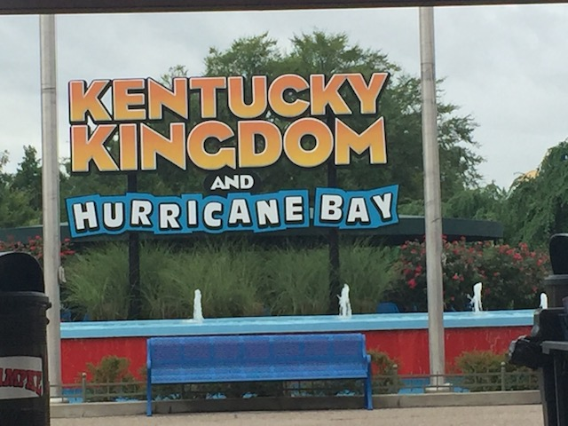
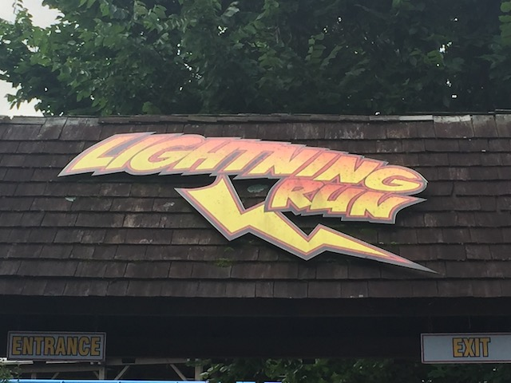
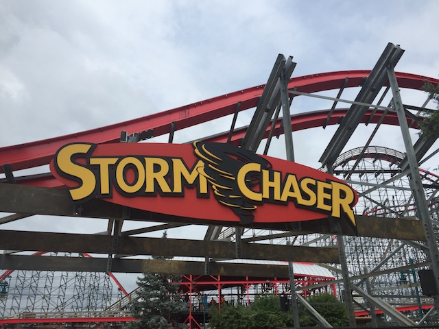
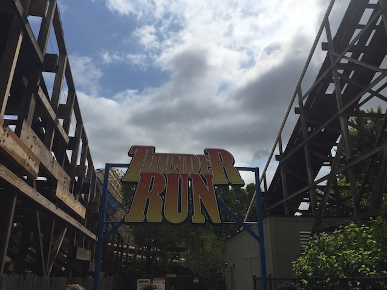
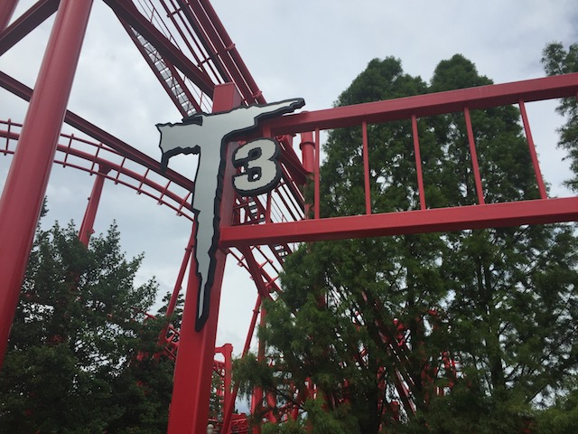
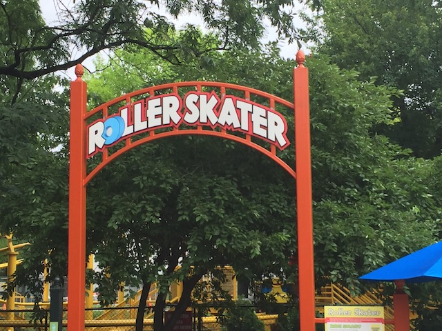
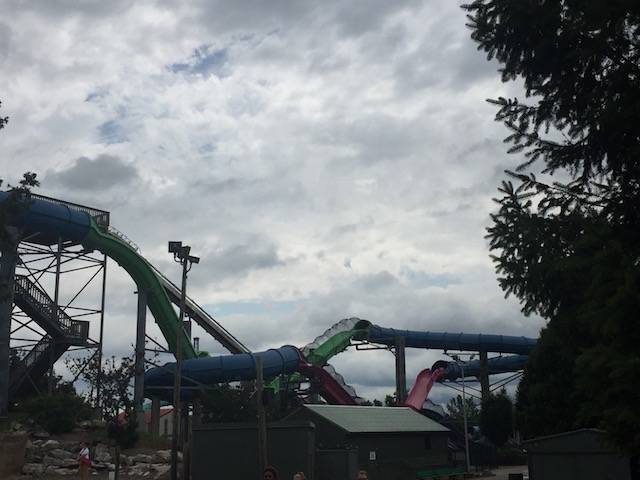
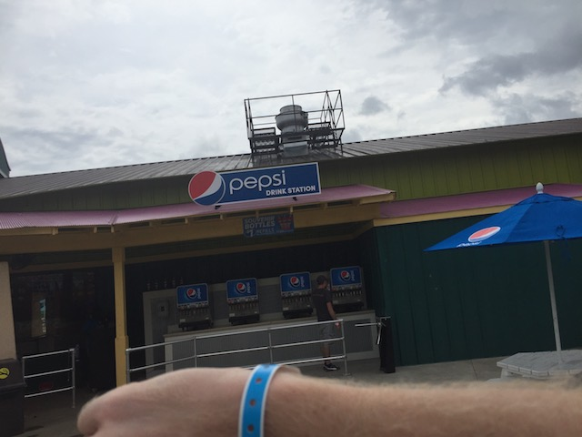

| |
Kentucky Kingdom Review

Kentucky Kingdom is a very interesting park with an even more interesting history. The park started out as a sort of extension of the Kentucky State Fair. However, that failed and it seemed like it was destined to fail until Ed Hart came and bought the park. He made it successful, and added several new rides. Eventually, he sold the park to Premier Parks, and then the park became Six Flags Kentucky Kingdom. Six Flags added several rides, and the park was doing really well. Things got bad in 2007, when an accident on the Superman: Power Tower drop tower caused a 13 year old girl to get her feet cut off. 3 years later, the park fell to bankruptcy and closed. Normally, the story would end there, but several people then tried to revive the park and give it a new lease on life. The Koch Family, owners of Holiday World, tried to revive the park as Bluegrass Boardwalk, but that plan failed. Ed Hart criticized the move, and vowed to reopen the park himself, and sure enough, in 2014, Kentucky Kingdom rose from the dead, and reopened. And it's a good thing too, since Kentucky Kingdom is a nice little park that has some great coasters. Lightning Run & Storm Chaser are MUCH better than their former star attraction back in the Six Flags days, Chang. Sure, the park does still feel like it was closed for 4 years and is still getting back on its feet in a few ways, but you can tell that they really are constantly breathing new life into the park. Hell, they're adding a new wooden coaster, Kentucky Flyer, to the park this year. So that's really good. Everything that they've done for the park since reopening has been incredibly successful, and if they keep up the good work, I see a lot of good things in the future for Kentucky Kingdom.
Rollercoasters
There is a link to a review of all the Rollercoasters at Kentucky Kingdom.
Please keep in mind that there is no review of Kentucky Flyer because it didn't exist when I last visited.
Top Coasters
Lightning Run Review

Storm Chaser Review

Decent Coasters
Thunder Run Review

Sh*tty Coasters
T3 Review

Kiddy Coasters
Roller Skater Review

Flat Rides
Here are the reviews of all the Flat Rides at Kentucky Kingdom. The star flat ride they have would be Fearfall. And yeah. This is the parks drop tower. Be careful there. Remember what happened last time you had a drop tower. ;) But seriously, Fearfall is one of those Shock Drops and yeah. Those are really fun rides. Shock Drops aren't given enough credit, and I am genuinely happy that Kentucky Kingdom isn't shying away from having another drop tower because of what happened with Superman: Tower of Power back in its Six Flags days. Moving onto the only flat ride that I actually bothered to do at the park. Scream Extreme. This is essentially a modern day enterprise. Same basic ride. Only with open modern seats. I honestly prefer the old school versions, but this is still a fun ride. Aside from that, the flat ride collection at Kentucky Kingdom consists of one of those tiny frisbees that are actually a lot of fun, a starflyer that's so small it should just be called elevated chairswings, a Larson Super Loop, a breakdance, a pirate ship, a himalaya, flyers, bumper cars, and a carousel. Nothing special, but hey. The park still has plenty of room to grow.
 Not as good as regular enterprises, but still a lot of fun.
Not as good as regular enterprises, but still a lot of fun.
Dark Rides
Kentucky Kingdom doesn't have any dark rides.
Water Rides
Ok, now I never rode any of the water rides at Kentucky Kingdom. So I really don't know too much about them. They have a river rapids, which looked fun in person, but I just did not want to get wet. And they also have a shoot the chutes ride. It looks fairly small, but man does it produce a big splash. So that should cool you off on a hot day.
Water Park
Yep, Kentucky Kingdom does have a water park. And from looking at it, it looks like a really freaking good water park. I mean, I can name 2 water slides here without doing research! Deluge, which I've heard really good things about, and is supposedly one of the better water coasters. And on top of that, they have the biggest trap door slide ever! *drool* Honestly, the only reason I didn't check it out is because of time, and I was gonna be at Splashin' Safari later that day. I know I'm for sure gonna spend some time here next time I visit.

I have high expectations for this water slide. Wish I had time to do it when I was there.
Dining
All right. I did not eat anything while I was at Kentucky Kingdom. However, my ticket did offer a wristband that allowed for free drinks. So I did get some free drinks from my visit to Kentucky Kingdom. It was part of a deal that's only avaliable to people out of state, and it's good for 2 days, and comes with free drinks. So yeah. We had to do it.

Hopefully this free soda with the out of state ticket sticks around.
Theming and Other Attractions
Here are the reviews of all the other stuff at Kentucky Kingdom. Well as for theming, there's not much. In fact, there's none at all. Kentucky Kingdom is very much, strictly an amusement park. There's about as much theming here as there is at a State Fair. On top of that, there's not much atmosphere to the park either. It is very close to the Louisville airport, so yeah. You're gonna see some low-flying planes. As far as other stuff to do, I'm not sure if there's too much else going on in that regard. I can't think of any shows that they have. At least none that stand out. I'm sure they have some standard local shows, some fun arcade stuff, standard games that you have at most amusement parks. But hey. The park certainly has room to grow.
In Conclusion
Kentucky Kingdom is a very interesting park. The park has definetly an interesting history, coming in and out of existance, closing only to rise again from the dead. And after the park rose from the dead, the park is really on the path to becoming a really good park. They added two world class coasters right after the park reopened, Lightning Run and Storm Chaser, and it keeps growing and growing, with a new coaster coming to the park this year. Add in a really good water park, and Kentucky Kingdom is really a fun place to hang out. Yeah, you can still see that the park has had troubles in the past, and it's still recovoring from its Six Flags days. But the way the park is going now, it's building up to be a really cool park, and I'm very excited to see what the park has to offer in the future and look foreward to visiting the park next time I visit Louisville.
Enthusiast FAQs.
*Are there kiddy coaster restrictions? - No. You can ride Roller Skater.

Tips
*Get lots of rides in on Lightning Run and Storm Chaser.
*Be sure to check out the water park. I may not have had time, but it seriously looks really good.
*Be sure to check and see if they have any deals if you're not from Kentucky.
*Have Fun!!!!
Location
Louisville, Kentucky, U.S.A
Theme Park Category:
Amusement Park
Last Day Visited
June 27, 2018
Video
I don't have enough footage to make a Kentucky Kingdom video since I didn't have enough time at the park. Perhaps in the future.
Complete Update List
2018
Mini Midwest Trip 2018
Here's a link to the parks website.
Home
|